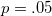
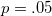

| 伝えるための心理統計 |
| 伝えるための心理統計 |
社会科学の研究においては、第1種の誤りの方が第2種の誤りよりも深刻である。 よって、後者に対して前者を4倍の厳しさで臨む1。
一方で、双方の誤りを同等に扱うべきであるとする研究者もいる2。
また、先行研究において効果量が高いとわかっている場合は、第2種の誤りの方を深刻と考えるべきとする研究者もいる3。
検定力は最低でも0.5を超えるべきであるとされるが4、社会科学の研究では大多数が検定力0.5に満たないとされる5。
RやG*Power6など。
有意でなかったケースについて事後検定力分析を行うべきであるとする雑誌が多数あるが、データから検定力を計算しても大した情報は得られず、時間の無駄である7。
 値と事後検定力には対応があり、なら事後検定力は0.5となる。
値と事後検定力には対応があり、なら事後検定力は0.5となる。
Footnotes
| 伝えるための心理統計 |